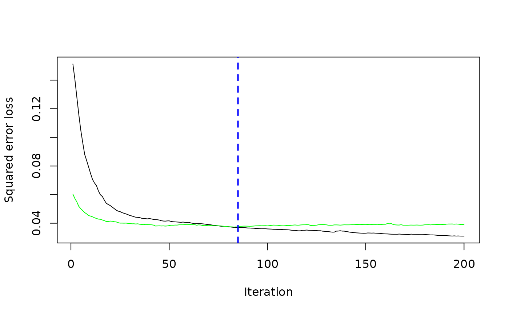
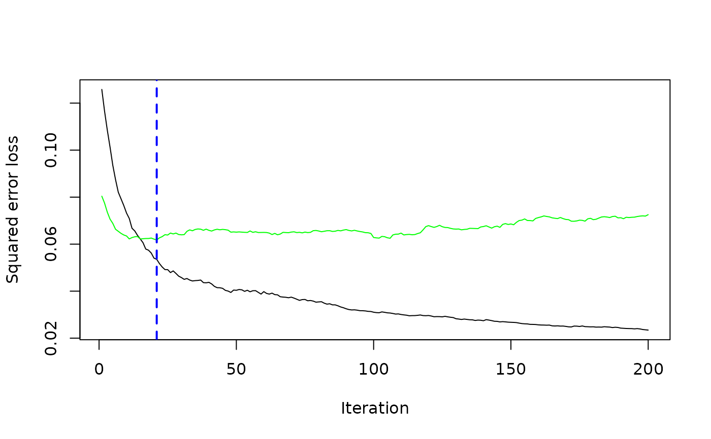

Estimation of the conditional average treatment effect (CATE) score for count, survival and continuous data
Source:R/CATE.R
catefit.RdProvides singly robust and doubly robust estimation of CATE score for count, survival and continuous data with up the following scoring methods among the following: Random forest (survival, continuous only), boosting, poisson regression (count, survival only), two regressions, contrast regression, negative binomial regression (count only), linear regression (continuous only), and generalized additive model (continuous only).
Usage
catefit(
response,
data,
score.method,
cate.model,
ps.model,
ps.method = "glm",
init.model = NULL,
initial.predictor.method = NULL,
ipcw.model = NULL,
ipcw.method = "breslow",
minPS = 0.01,
maxPS = 0.99,
followup.time = NULL,
tau0 = NULL,
higher.y = TRUE,
prop.cutoff = seq(0.5, 1, length = 6),
surv.min = 0.025,
xvar.smooth.score = NULL,
xvar.smooth.init = NULL,
tree.depth = 2,
n.trees.rf = 1000,
n.trees.boosting = 200,
B = 3,
Kfold = 5,
error.maxNR = 0.001,
max.iterNR = 150,
tune = c(0.5, 2),
seed = NULL,
plot.gbmperf = TRUE,
verbose = 0,
...
)Arguments
- response
A string describing the type of outcome in the data. Allowed values include "count" (see
catecvcount()), "survival" (seecatecvsurv()) and "continuous" (seecatecvmean()).- data
A data frame containing the variables in the outcome, propensity score, and inverse probability of censoring models (if specified); a data frame with
nrows (1 row per observation).- score.method
A vector of one or multiple methods to estimate the CATE score. Allowed values are:
'boosting','twoReg','contrastReg','poisson'(count and survival outcomes only),'randomForest'(survival, continuous outcomes only),negBin(count outcomes only),'gam'(continuous outcomes only),'gaussian'(continuous outcomes only).- cate.model
A formula describing the outcome model to be fitted. The outcome must appear on the left-hand side. For survival outcomes, a
Survobject must be used to describe the outcome.- ps.model
A formula describing the propensity score (PS) model to be fitted. The treatment must appear on the left-hand side. The treatment must be a numeric vector coded as 0/1. If data are from a randomized controlled trial, specify
ps.model = ~1as an intercept-only model.- ps.method
A character value for the method to estimate the propensity score. Allowed values include one of:
'glm'for logistic regression with main effects only (default), or'lasso'for a logistic regression with main effects and LASSO penalization on two-way interactions (added to the model if interactions are not specified inps.model). Relevant only whenps.modelhas more than one variable.- init.model
A formula describing the initial predictor model. The outcome must appear on the left-hand side. It must be specified when
score.method = contrastRegortwoReg.- initial.predictor.method
A character vector for the method used to get initial outcome predictions conditional on the covariates specified in
cate.model. Only applies whenscore.methodincludes'twoReg'or'contrastReg'.Allowed values include one of'randomForest'(survival outcomes only),'boosting','logistic'(survival outcomes only, fast),'poisson'(count outcomes only, fast),'gaussian'(continuous outcomes only) and'gam'(count and continuous outcomes only). Default isNULL, which assigns'boosting'for count outcomes and'randomForest'for survival outcomes.- ipcw.model
A formula describing the inverse probability of censoring weighting (IPCW) model to be fitted. The left-hand side must be empty. Only applies for survival outcomes. Default is
NULL, which corresponds to specifying the IPCW with the same covariates as the outcome modelcate.model, plus the treatment.- ipcw.method
A character value for the censoring model. Only applies for survival outcomes. Allowed values are:
'breslow'(Cox regression with Breslow estimator of t he baseline survivor function),'aft (exponential)','aft (weibull)','aft (lognormal)'or'aft (loglogistic)'(accelerated failure time model with different distributions for y variable). Default is'breslow'.- minPS
A numerical value (in [0, 1]) below which estimated propensity scores should be truncated. Default is
0.01.- maxPS
A numerical value (in (0, 1]) above which estimated propensity scores should be truncated. Must be strictly greater than
minPS. Default is0.99.- followup.time
A column name in
dataspecifying the maximum follow-up time, interpreted as the potential censoring time. Only applies for survival outcomes. Default isNULL, which corresponds to unknown potential censoring time.- tau0
The truncation time for defining restricted mean time lost. Only applies for survival outcomes. Default is
NULL, which corresponds to setting the truncation time as the maximum survival time in the data.- higher.y
A logical value indicating whether higher (
TRUE) or lower (FALSE) values of the outcome are more desirable. Default isTRUE.- prop.cutoff
A vector of numerical values (in (0, 1]) specifying percentiles of the estimated log CATE scores to define nested subgroups. Each element represents the cutoff to separate observations in nested subgroups (below vs above cutoff). The length of
prop.cutoffis the number of nested subgroups. An equally-spaced sequence of proportions ending with 1 is recommended. Default isseq(0.5, 1, length = 6).- surv.min
Lower truncation limit for the probability of being censored. It must be a positive value and should be chosen close to 0. Only applies for survival outcomes. Default is
0.025.- xvar.smooth.score
A vector of characters indicating the name of the variables used as the smooth terms if
score.method = 'gam'. The variables must be selected from the variables listed incate.model.- xvar.smooth.init
A vector of characters indicating the name of the variables used as the smooth terms if
initial.predictor.method = 'gam'. The variables must be selected from the variables listed ininit.model. Default isNULL, which uses all variables ininit.model.- tree.depth
A positive integer specifying the depth of individual trees in boosting (usually 2-3). Used only if
score.method = 'boosting'or ifinitial.predictor.method = 'boosting'withscore.method = 'twoReg'or'contrastReg'. Default is 2.- n.trees.rf
A positive integer specifying the maximum number of trees in random forest. Used if
score.method = 'ranfomForest'or ifinitial.predictor.method = 'randomForest'withscore.method = 'twoReg'or'contrastReg'. Only applies for survival outcomes. Default is1000.- n.trees.boosting
A positive integer specifying the maximum number of trees in boosting (usually 100-1000). Used if
score.method = 'boosting'or ifinitial.predictor.method = 'boosting'withscore.method = 'twoReg'or'contrastReg'. Default is200.- B
A positive integer specifying the number of time cross-fitting is repeated in
score.method = 'twoReg'and'contrastReg'. Default is3.- Kfold
A positive integer specifying the number of folds used in cross-fitting to partition the data in
score.method = 'twoReg'and'contrastReg'. Default is5.- error.maxNR
A numerical value > 0 indicating the minimum value of the mean absolute error in Newton Raphson algorithm. Used only if
score.method = 'contrastReg'. Default is0.001.- max.iterNR
A positive integer indicating the maximum number of iterations in the Newton Raphson algorithm. Used only if
score.method = 'contrastReg'. Default is150.- tune
A vector of 2 numerical values > 0 specifying tuning parameters for the Newton Raphson algorithm.
tune[1]is the step size,tune[2]specifies a quantity to be added to diagonal of the slope matrix to prevent singularity. Used only ifscore.method = 'contrastReg'. Default isc(0.5, 2).- seed
An optional integer specifying an initial randomization seed for reproducibility. Default is
NULL, corresponding to no seed.- plot.gbmperf
A logical value indicating whether to plot the performance measures in boosting. Used only if
score.method = 'boosting'or ifscore.method = 'twoReg'or'contrastReg'andinitial.predictor.method = 'boosting'. Default isTRUE.- verbose
An integer value indicating whether intermediate progress messages and histograms should be printed.
1indicates messages are printed and0otherwise. Default is0.- ...
Additional arguments for
gbm()
Value
For count response, see description of outputs in catefitcount().
For survival response, see description of outputs in catefitsurv().
Details
For count response, see details in catefitcount().
For survival response, see details in catefitsurv().
References
Yadlowsky, S., Pellegrini, F., Lionetto, F., Braune, S., & Tian, L. (2020). Estimation and validation of ratio-based conditional average treatment effects using observational data. Journal of the American Statistical Association, 1-18. https://www.tandfonline.com/doi/full/10.1080/01621459.2020.1772080
See also
catecv()
Examples
# Count outcome
fit_1 <- catefit(response = "count",
data = countExample,
score.method = "poisson",
cate.model = y ~ age + female + previous_treatment +
previous_cost + previous_number_relapses +
offset(log(years)),
ps.model = trt ~ age + previous_treatment,
higher.y = TRUE,
seed = 999)
#> Warning: Variable trt was recoded to 0/1 with drug0->0 and drug1->1.
coef(fit_1)
#> poisson
#> (Intercept) -0.58185218
#> age -0.01117701
#> female 0.58829733
#> previous_treatmentdrugB 0.73724361
#> previous_treatmentdrugC 0.15545985
#> previous_cost -0.13035642
#> previous_number_relapses -0.05339112
# \donttest{
# Survival outcome
library(survival)
tau0 <- with(survivalExample,
min(quantile(y[trt == "drug1"], 0.95), quantile(y[trt == "drug0"], 0.95)))
fit_2 <- catefit(response = "survival",
data = survivalExample,
score.method = c("poisson", "boosting", "randomForest"),
cate.model = Surv(y, d) ~ age + female + previous_cost +
previous_number_relapses,
ps.model = trt ~ age + previous_treatment,
initial.predictor.method = "logistic",
ipcw.model = ~ age + previous_cost + previous_treatment,
tau0 = tau0, higher.y = TRUE, seed = 999, n.cores = 1)
#> Warning: Variable trt was recoded to 0/1 with drug0->0 and drug1->1.
#> Loaded gbm 2.2.2
#> This version of gbm is no longer under development. Consider transitioning to gbm3, https://github.com/gbm-developers/gbm3
#> CV: 1
#> CV: 2
#> CV: 3
#> CV: 4
#> CV: 5

#> CV: 1
#> CV: 2
#> CV: 3
#> CV: 4
#> CV: 5

coef(fit_2)
#> poisson
#> (Intercept) 0.46109243
#> age -0.24335209
#> female 0.12532711
#> previous_cost 0.89803249
#> previous_number_relapses -0.02470863
# }